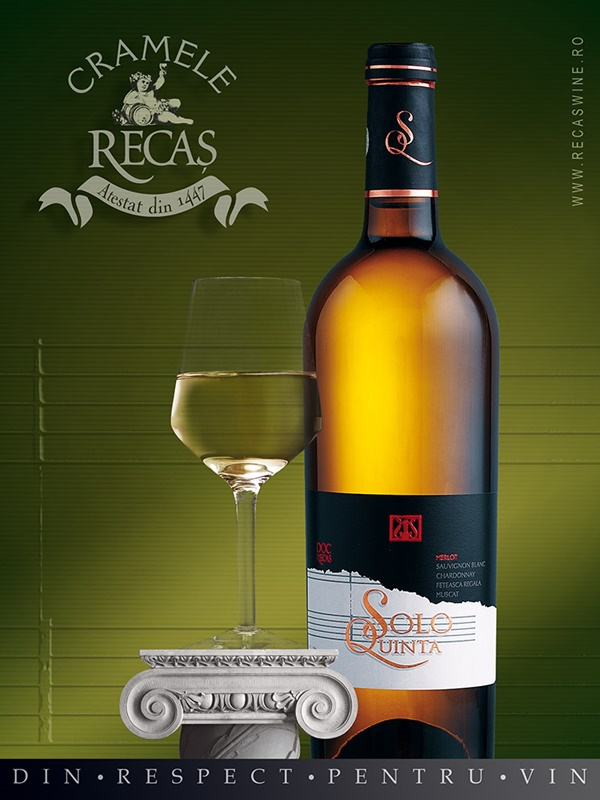

Solo Quinta
Doresc sa va vorbesc, in primul rand, despre vinul meu preferat. Un vin sec, extrem de aromat si fructat. Este o adevarata explozie de savoare cand gusti acest vin.
Este un cupaj din cinci soiuri,patru albe si unul rosu, ce se schimba in fiecare an, aromatizate intr-un singur vin dedicat pentru cele mai rafinate si exigente gusturi.
Conceptul Solo Quinta a adus, de la naştere şi până acum, recunoaşterea Cramelor Recaş atât prin numeroasele medalii, cât şi prin listarea la câteva dintre cele mai exclusiviste restaurante din lume. În acest an, a venit rândul Pinot Noir-ului să fie vinificat în alb şi integrat în acest cupaj alchimic, alături de patru soiuri albe..
Gustativ, este surprinzător de vivace, în ciuda corpului mediu spre dens, contribuţia fiecărui soi se face simţită ca într-un cor, fără ca vreunul dintre struguri să încerce să preia prima voce. De la fructe albe la flori şi înapoi, cu o susţinere solidă din partea accentelor minerale şi a acidităţii, vinul îşi dezvăluie complexitatea în timp.
